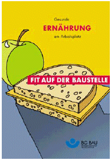

Die einzelnen Bausteine des Wohlstandssyndroms als Symptomenkomplex gehen meist von denselben Ursachen, nämlich Fehlernährung und Bewegungsmangel, aus und verstärken sich gegenseitig in ihrer krankmachenden Wirkung.
Zur Vorbeugung des Wohlstandsyndroms eignet sich sehr gut:
DIE MEDITERRANE KOST:
Entscheidend für die Gewichtsreduktion ist aber auch hier die Kalorienreduktion (verminderte Energieaufnahme über die Nahrung möglichst in Verbindung mit vermehrter Energieabgabe über Ausdauersport). Darüber hinaus empfiehlt es sich, auf das Rauchen zu verzichten.
Durch Umstellung der Ernährungsgewohnheiten und ein ausdauerbetontes Ausgleichstraining wird sich langsam, aber konsequent, auch ein erhöhtes Körpergewicht normalisieren.
Eine gute Hilfe ist ein einfaches Ernährungs- und Bewegungstagebuch. Dazu reicht ein Taschenkalender in den Sie eintragen können, was Sie gegessen und getrunken haben (ohne dies genau zu wiegen oder zu messen!). Schreiben Sie ebenfalls über den Tag oder am Abend auf, was Sie außer Ihrer beruflichen Arbeit an besonderen Tätigkeiten geleistet haben. Auch selbst ausgesprochenes Lob für gute Ernährung oder körperliche Anstrengung kann hier seinen Platz finden. Wenn Sie möchten, können Sie Ihrem Hausarzt aus Ihrem Tagebuch berichten und ggf. gemeinsam erreichbare Behandlungsziele vereinbaren.
Weitere Hinweise zur Ernährung finden Sie in der Broschüre "Gesunde Ernährung am Arbeitsplatz"des ASD der BG BAU.
